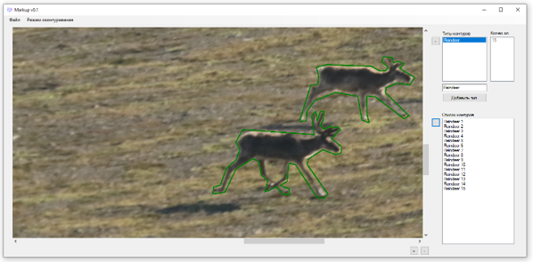
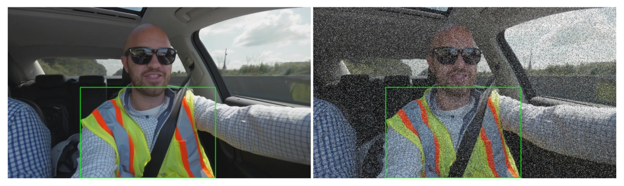
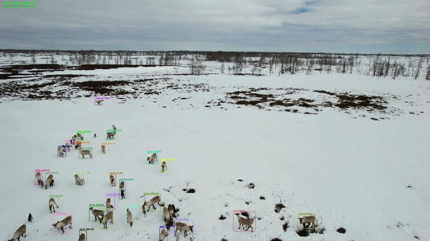

Существующие проблемы
Бессистемность архитектур
Существует множество архитектур глубокого обучения, список которых плохо систематизирован. Платформы для агрегации информации только набирают популярность.
Отсутствие универсального подхода
Нет единого метода генерации и обучения моделей — разные алгоритмы подходит для конкретных задач, требуя индивидуальной доработки.
Прототипы с трудом адаптируются
Существующие решения часто реализованы как прототипы, которые требуют глубокой модификации под задачу и понимания архитектуры ML-специалистом.
Предлагаемый подход
AutoGenNet решает вышеописанные проблемы через комплексный подход AutoML, который охватывает все этапы создания моделей компьютерного зрения:
Подготовка и аугментация данных
Автоматическая обработка, очистка и расширение датасетов для повышения качества моделей
Синтез и оптимизация моделей
Автоматический выбор архитектуры и тонкая настройка гиперпараметров без ручного вмешательства
Мета-обучение
Использование знаний из предыдущих проектов для ускорения обучения новых моделей
Пользовательские интерфейсы
Интуитивно понятные UI для синтеза и управления моделями без глубоких технических знаний
Интеграция в ПО
Готовые API и скрипты для быстрой внедрения моделей в существующие системы
Существующие решения на основе AutoML
Автоматизируют создание программ, но требуют участия экспертов в области машинного обучения для использования. Примеры: AutoKeras, auto-sklearn.
Автоматизируют создание программ, но являются проприетарными решениями и требуют участия экспертов в области машинного обучения для использования. Пример: Google Cloud AutoML.
Автоматизируют весь цикл проектирования моделей, но имеют ограничения при интеграции созданных моделей в стороннее ПО, являются проприетарными решениями и требуют экспертов в этих пакетах для использования. Пример: Matlab.
Автоматизируют проектирование отдельных архитектур глубокого обучения или решают конкретные задачи AutoML, но не используют комплексный подход к решению проблем. Примеры: ГосНИИАС, ИТМО.
Ключевые модули AutoGenNet
Модуль автоматической разметки изображений
Автоматическая разметка ускоряет подготовку больших и качественных датасетов для обучения нейросетей. Она снижает затраты на ручную разметку, повышает точность благодаря единообразию тегов и позволяет быстро масштабировать проекты и запускать новые модели.


Модуль автоматического аугментирования данных
Автоматическая аугментация создает новые варианты изображений — повороты, масштабирование, изменения освещения. Это увеличивает объем и разнообразие датасета без дополнительных затрат на сбор данных. Модуль снижает переобучение и помогает моделям лучше работать на реальных, непредсказуемых данных.
Модуль автоматической генерации моделей детекции объектов
Модуль автоматически управляет всем циклом обучения детекторов: выбором архитектуры, настройкой гиперпараметров и оценкой качества. Это резко сокращает время разработки и исключает ошибки ручной настройки. Итог — точные и готовые к внедрению модели для транспорта, безопасности, логистики и других отраслей.
Модуль автоматической генерации моделей сегментации изображений
Позволяет быстро обучать высокоточные модели для выделения объектов на уровне пикселей. Автоматизация сложных этапов — поиска архитектуры и настройки параметров — ускоряет итерации и снижает требования к экспертным знаниям. Модели подходят для медицины, автономных систем и сельского хозяйства.
Модуль автоматической генерации моделей видеомониторинга
Автоматизирует обучение моделей сегментации и отслеживания объектов в видео. Это значительно уменьшает трудозатраты и ускоряет разработку решений для автономного вождения, медицинского анализа видеосъемки и интеллектуального наблюдения, включая использование дронов.

Модуль автоматической генерации программных оболочек
AutoGenNet создает не только модели, но и программные обертки для их запуска: Python-скрипты, а также SOAP- и REST-API. Это позволяет интегрировать модели в внешние системы и IoT-устройства без участия ML-специалистов — быстро и с минимальными затратами.
Легкий мобильный клиент
Позволяет собирать данные на месте (фотографии, видео), отправлять их на обработку в облако и получать мгновенные результаты. Ускоряет итерации моделирования — идеально для инспекторов, агрономов и медицинского персонала.
Будущие обновления
Расширение архитектур
Увеличение набора поддерживаемых архитектур глубокого обучения для улучшения качества генерации моделей.
Более эффективный алгоритм
Разработка оптимизированного алгоритма автоматической генерации моделей — ускорение и повышение точности.